연동은 했는데 기록이 이상하면 이 안내를 봐 주세요. 내 경우를 누르면 바로 그 설명으로 가요.
헬스 커넥트는 휴대폰 안에 있는 기록 보관함이에요. 워치 앱이 보관함에 기록을 넣고, 런하우스가 보관함에서 기록을 꺼내 와요.
문이 두 개예요. 넣는 문과 꺼내는 문이 둘 다 열려 있어야 기록이 와요. 런하우스 연동만 켜고 워치 앱 쪽을 안 켜면, 보관함이 비어 있어서 가져올 기록이 없어요.
「헬스 커넥트」 → 「앱 권한」을 열면 보관함을 쓰는 앱이 모여 있어요. 내가 달릴 때 쓰는 앱 하나와 런하우스가 둘 다 이 목록에 있어야 해요. 가민 · 나이키런클럽 · 삼성 헬스 모두 똑같아요.
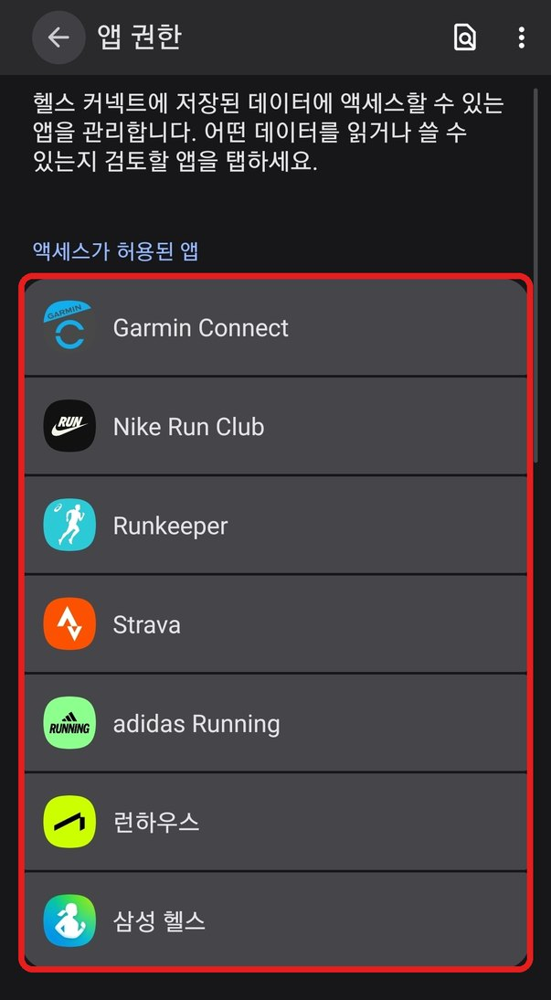
기록이 안 보이면 보관함에 그 기록이 있는지부터 봐요. 어느 문이 닫혔는지 바로 알 수 있어요.
나온 「헬스 커넥트」를 눌러요.
시간 옆에 기록을 넣은 앱 이름이 적혀 있어요.
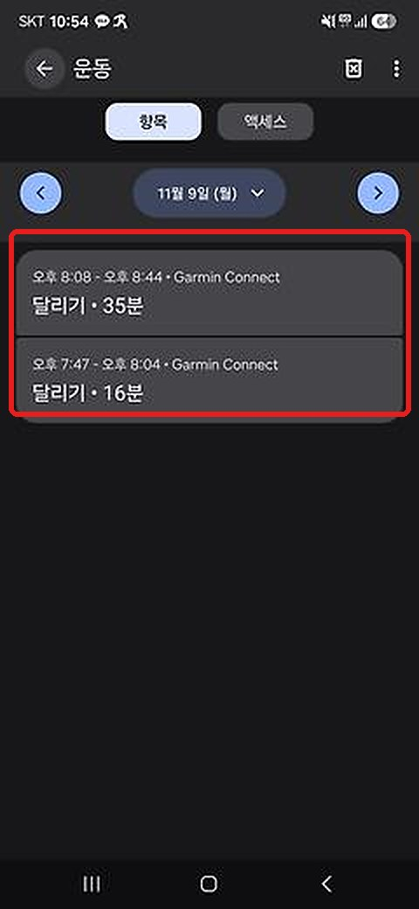
있으면 넣는 문은 열려 있어요. 가민 기록이면 거리 설정부터 봐 주세요. 그다음 두 번 잡히거나 빠질 때와 최근 기록만 빠질 때를 봐 주세요.
없으면 워치 앱이 기록을 안 넣은 거예요. 아래에서 쓰는 앱을 골라 넣는 문을 열어 주세요.
가민은 안드로이드 14 이상 휴대폰에서 헬스 커넥트로 기록을 보낼 수 있어요.
「Health Connect와 동기화 중」이 보이면 돼요.
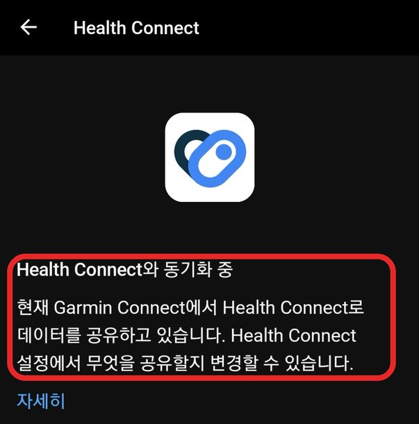
가민이 보관함에 기록을 넣어도 된다는 허락이에요.
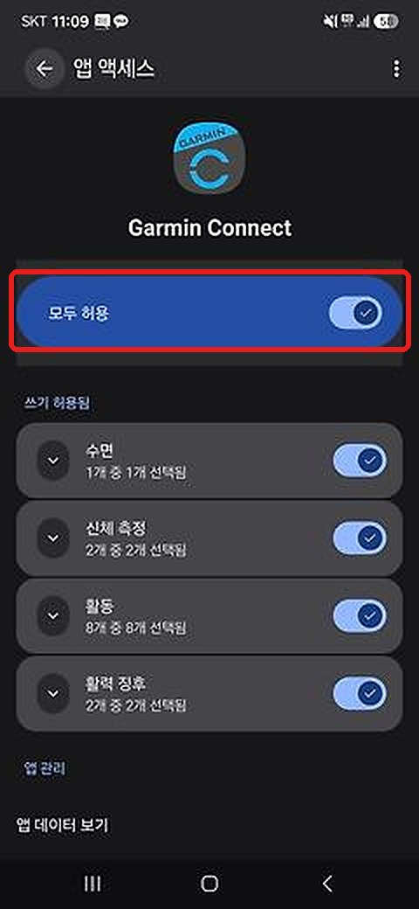
동기화가 끝나면 보관함에 Garmin Connect 달리기가 보여요.
런하우스는 달린 거리가 있어야 기록을 가져와요. 가민 기록에 거리가 빠져 있으면 못 가져와요. 아래 화면에서 가민을 「거리를 알려 주는 앱」으로 추가해 주세요.
「데이터 소스」에 Garmin Connect가 없으면 데이터 소스 추가하기를 눌러 Garmin Connect를 골라요. 그다음 런하우스 「러닝 기록」 오른쪽 위 동그라미를 눌러 주세요.
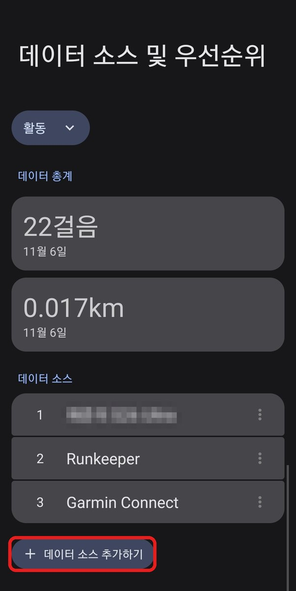
쓰기 · 읽기 허용과는 따로 있는 설정이에요. COROS를 쓰면 COROS를 골라 주세요.
메뉴가 안 보이면 나이키런클럽을 업데이트해 주세요.
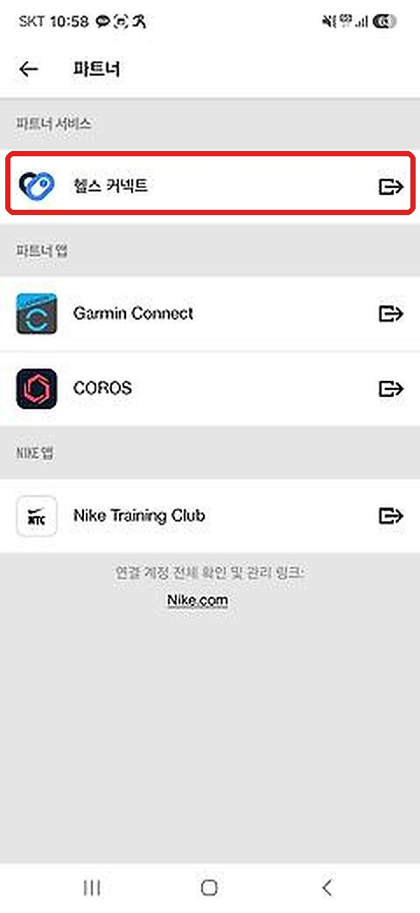
「연결」 버튼이 보이면 눌러서 연결해 주세요.
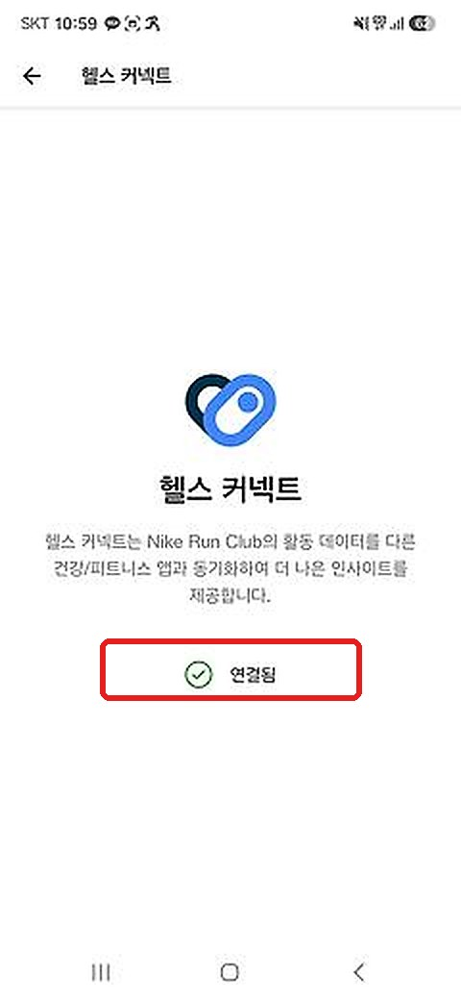
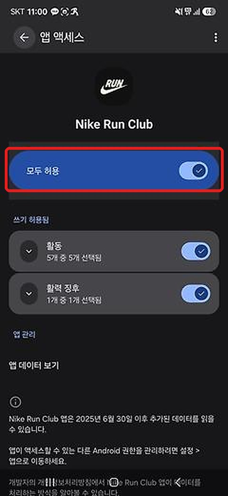
「앱 권한 → Nike Run Club → 앱 데이터 보기 → 운동」에서도 볼 수 있어요.
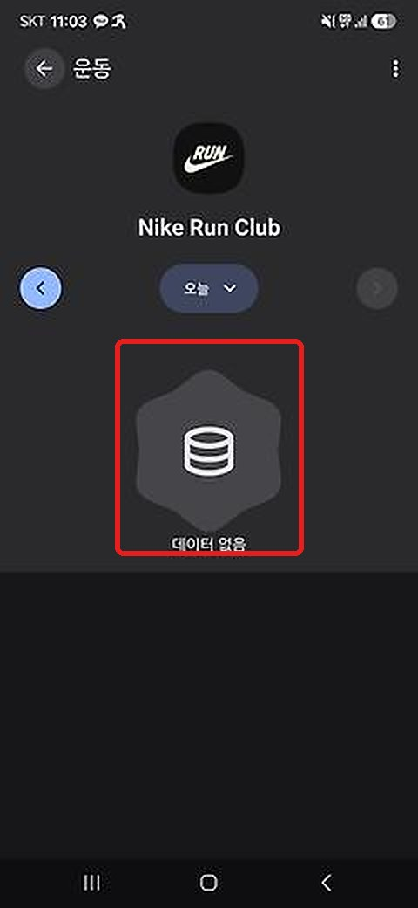
나이키런클럽이 아직 보관함에 기록을 안 넣은 거예요. 이때는 런하우스가 가져올 수 없어요.
헬스 커넥트에 연결하기 전에 달린 기록은 보관함으로 넘어가지 않을 수 있어요.
삼성 헬스에는 기록이 있는데 보관함이 비어 있으면, 삼성 헬스가 보관함에 기록을 안 넣고 있는 거예요.
「접근 허용됨」이 없으면 눌러서 모두 허용해 주세요.
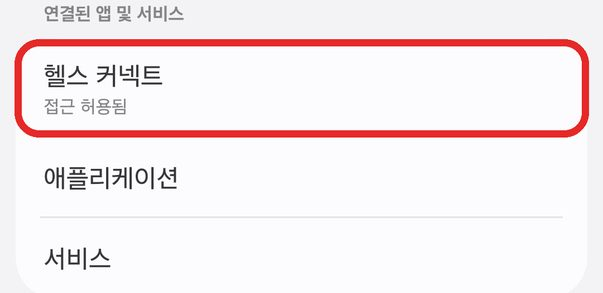
그다음 런하우스 「러닝 기록」 오른쪽 위 동그라미를 눌러 주세요.
처음부터 따라 하려면 갤럭시 워치, 삼성 헬스 편을 봐 주세요.
한 번 달렸는데 휴대폰과 워치가 둘 다 기록하면 보관함에 같은 러닝이 두 개 생겨요. 둘의 거리도 조금씩 달라요.
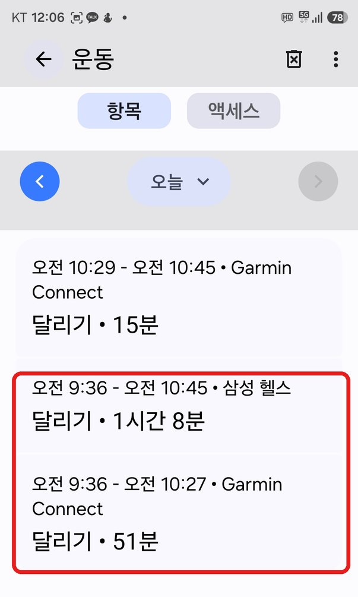
같은 시각에 삼성 헬스와 Garmin Connect 기록이 함께 있어요.
런하우스는 어느 쪽이 맞는지 몰라서 둘 다 안 가져올 때가 있어요. 그래서 내가 주로 쓰는 앱이나 워치를 알려 주면 그쪽 기록을 가져와요.
런하우스 「러닝 기록」에 「시간이 겹치는 기록」이 보이면 이 경우예요.
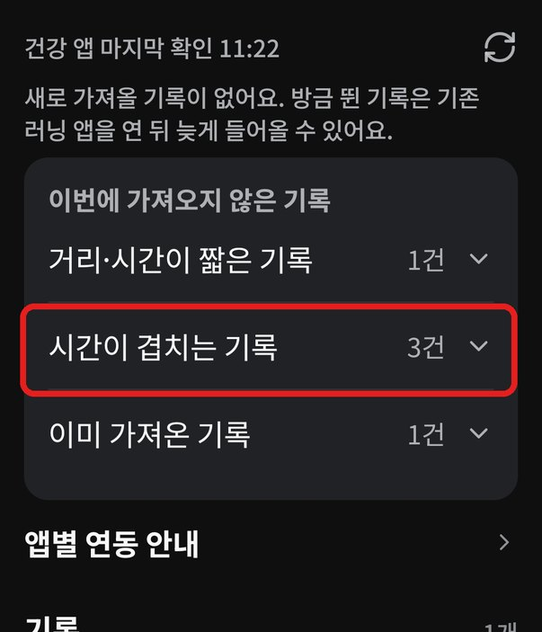
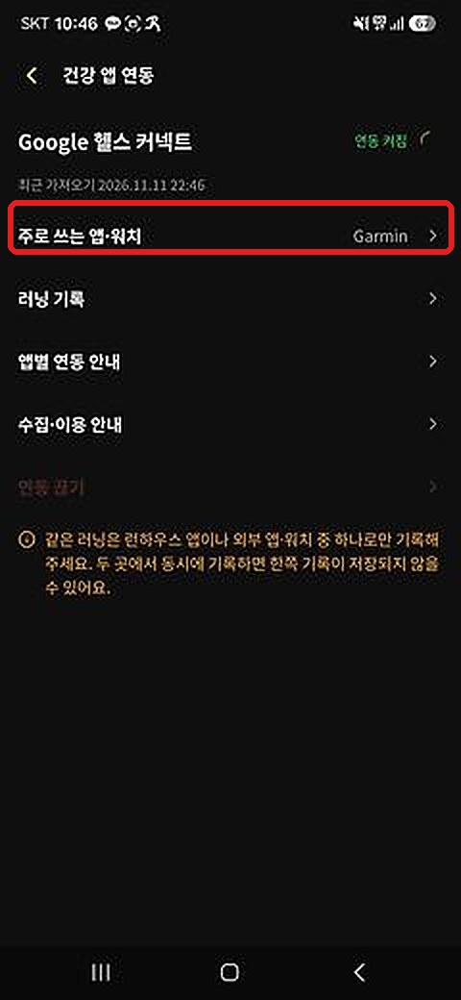
가민 시계로 달리면 Garmin, 갤럭시 워치면 삼성 헬스·갤럭시 워치를 골라요.
고른 뒤 새로 가져오는 러닝부터, 겹치면 고른 쪽 기록으로 들어와요.
다른 쪽 기록이 이미 들어왔거나 반영됐다면 그 러닝은 바뀌지 않아요. 바꾸고 싶으면 1:1 문의로 알려 주세요.
삼성 헬스는 걸음을 보고 「달리기(자동)」을 알아서 기록해요. 워치로 달리면 이 기록과 겹쳐요.
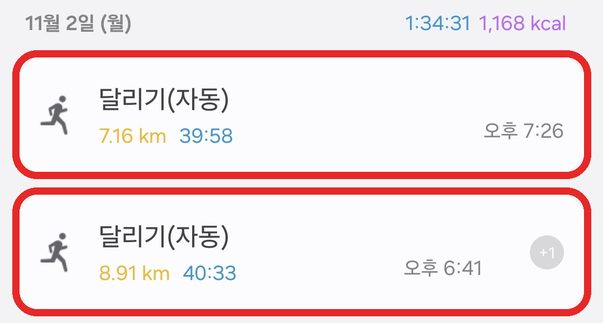
삼성 헬스 「설정」 → 「운동 자동 인식」을 끄면 겹치지 않아요.
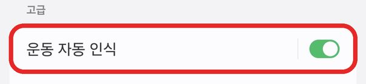
같은 러닝은 런하우스 앱이나 워치 중 하나로만 기록해 주세요. 둘 다 켜면 한쪽 기록이 저장되지 않을 수 있어요.
예전 버전 앱이에요. 플레이 스토어에서 런하우스를 업데이트한 뒤, 앱을 완전히 껐다가 두 번 다시 열어 주세요.
「러닝 기록」 오른쪽 위 동그라미를 누르면 오래된 기록부터 차례로 가져와요. 중간에 다른 앱으로 넘어가거나 화면이 꺼지면 거기서 멈춰서, 맨 나중인 최근 기록이 빠질 수 있어요.
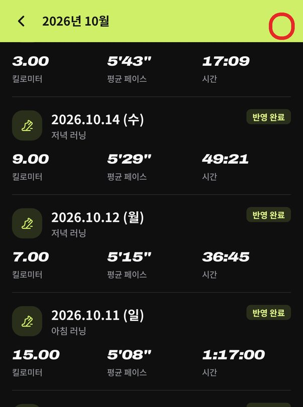
동그라미를 누른 뒤에는 다 끝날 때까지 런하우스 화면을 켜 둬 주세요.
기록이 들어와도 크루 점수엔 바로 안 올라가요. 「반영 전」 기록을 눌러 크루와 러닝 종류를 고르고 「지금 반영」을 눌러 주세요. 기록마다 한 번씩 해요.
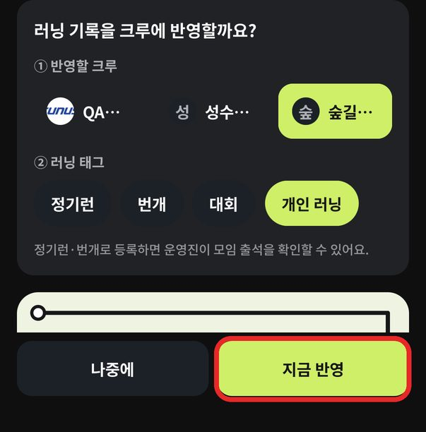
카카오톡으로 답해 드려요. 아래 두 장을 캡처해서 보내 주시면 더 빨라요.
런하우스 앱 메뉴 → 1:1 문의로 들어오면 내 계정 정보가 자동으로 복사돼요. 채팅창에 붙여 넣어 주세요.
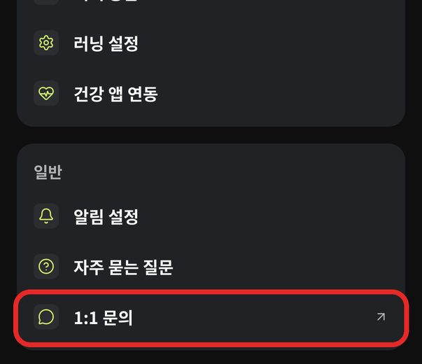
카카오톡 문의